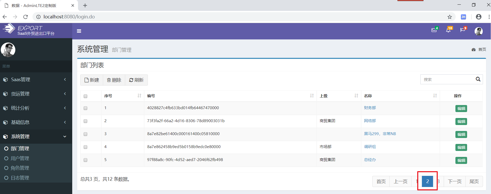
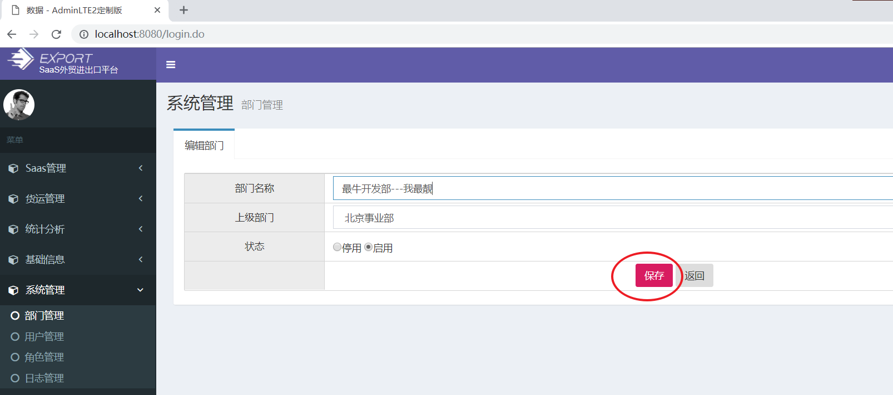

学习目标
- 实现部门模块操作
- 抽取BaseController
- 理解RBAC权限模型
- 实现用户模块操作
1. 部门管理-需求分析
需求
实现部门模块CRUD操作。
查看PD模型
注意，可以看到有个parent_id，这是父部门ID。parent_id不为空，代表这些部门是有父部门的，
例如：北京事业部的 父部门 是 商务集团
查询企业的部门列表
- 如图：
- SQL如下

-- 部门表有一个字段parent_id ， 该字段的意思是表示该部门的父部门。自关联
-- 查询所有部门, 部门是属于某家公司特有的，部门不能共享。
SELECT * FROM pe_dept WHERE company_id = '1';
2. 部门分页列表（一）后台
目标
实现部门==列表展示==，页面入口如下：
步骤
编写Dept实体类
编写DeptDao接口
编写DeptDao接口映射
编写DeptService接口
编写DeptServiceImpl接口实现
实现
编写Dept实体类
图1：
图2：
package cn.itcast.domain.system; public class Dept { private String id; private String deptName; //北京事业部 dept.parentId 100 ,如果我们需要知道该部门的父部名称那应该如何？ //private String parentId; //父部门的id. 弊端：如果我们想知道当前部门的父部门的名称不方便。 dept.parentId = id private Dept parent; //父部门对象。 dept.parent.deptName private String state; private String companyId; private String companyName; public String getId() { return id; } public void setId(String id) { this.id = id; } public String getDeptName() { return deptName; } public void setDeptName(String deptName) { this.deptName = deptName; } public Dept getParent() { return parent; } public void setParent(Dept parent) { this.parent = parent; } public String getState() { return state; } public void setState(String state) { this.state = state; } public String getCompanyId() { return companyId; } public void setCompanyId(String companyId) { this.companyId = companyId; } public String getCompanyName() { return companyName; } public void setCompanyName(String companyName) { this.companyName = companyName; } }
思考：如果Dept的父部门只是封装parent_id，那么我们想获取当前部门的父部门信息还需要查询一次部门表，这样就太麻烦啦。所以就设计为Dept 对象，方便封装父部门的所有信息。
编写DeptDao接口
图1：
图2：
package cn.itcast.dao.system; import cn.itcast.domain.system.Dept; import java.util.List; public interface DeptDao { //根据企业id查找所有部门 List<Dept> findAll(String companyId); //根据部门的id查找部门 Dept findById(String deptId); }编写DeptDao接口映射(
图1：
图2：
<?xml version="1.0" encoding="UTF-8" ?> <!DOCTYPE mapper PUBLIC "-//mybatis.org//DTD Mapper 3.0//EN" "http://mybatis.org/dtd/mybatis-3-mapper.dtd"> <!-- namespace名称空间，名称空间代表该xml文件映射是哪个接口--> <mapper namespace="cn.itcast.dao.system.DeptDao"> <resultMap id="BaseResultMap" type="cn.itcast.domain.system.Dept"> <!--property:java实体类的属性名 column：数据库表的字段名--> <id property="id" column="dept_id"/> <result property="deptName" column="dept_name"/> <result property="state" column="state"/> <result property="companyId" column="company_id"/> <result property="companyName" column="company_name"/> <!--如果一个属性是一个对象的时候，我们需要使用association标签 如果一个属性是一个集合对象的时候， 我们需要使用collection标签 column： 代表调用方法传入的实参 select： 代表调用的方法名,如果是在本Dao中，直接写方法名，如果 是在其他Dao里面需要类全名+方法名 --> <association property="parent" column="parent_id" select="findById"/> </resultMap> <!-- //根据企业id查找所有部门 List<Dept> findAll(String companyId);--> <select id="findAll" resultMap="BaseResultMap"> select * from pe_dept where company_id =#{companyId} </select> <!-- //根据部门的id查找部门 Dept findById(String deptId);--> <select id="findById" resultMap="BaseResultMap"> select * from pe_dept where dept_id = #{deptId} </select> </mapper>编写DeptService接口
图1：
图2：
package cn.itcast.service.system; import cn.itcast.domain.system.Dept; import com.github.pagehelper.PageInfo; public interface DeptService { //分页查询整个部门 PageInfo<Dept> findByPage(Integer pageNum,Integer pageSize,String companyId); }编写DeptServiceImpl接口实现
图1：
图2：
package cn.itcast.service.system.impl; import cn.itcast.dao.system.DeptDao; import cn.itcast.domain.system.Dept; import cn.itcast.service.system.DeptService; import com.github.pagehelper.PageHelper; import com.github.pagehelper.PageInfo; import org.springframework.beans.factory.annotation.Autowired; import org.springframework.stereotype.Service; import java.util.List; @Service public class DeptServiceImpl implements DeptService { @Autowired private DeptDao deptDao; //分页查询整个部门 @Override public PageInfo<Dept> findByPage(Integer pageNum, Integer pageSize, String companyId) { //1. 设置当前页与页面大小 PageHelper.startPage(pageNum,pageSize); //2 查询所有 List<Dept> deptList = deptDao.findAll(companyId); //3. 创建PageInfo对象 PageInfo<Dept> pageInfo = new PageInfo<>(deptList); return pageInfo; } }
3. 部门分页列表（二）控制器、页面
目标
完整实现部门列表。
步骤
- 编写DeptController
- 编写页面，分页显示数据
实现
编写DeptController
图1：
图2：
package cn.itcast.web.controller.system; import cn.itcast.domain.system.Dept; import cn.itcast.service.system.DeptService; import com.github.pagehelper.PageInfo; import org.springframework.beans.factory.annotation.Autowired; import org.springframework.stereotype.Controller; import org.springframework.web.bind.annotation.RequestMapping; import org.springframework.web.bind.annotation.RequestParam; import javax.servlet.http.HttpServletRequest; @Controller @RequestMapping("/system/dept") public class DeptController { @Autowired private DeptService deptService; /* 作用 : 进入到部门分页列表中 url: /system/dept/list.do 参数： 当前页， 页面大小 返回值： system/dept/dept-list */ @RequestMapping("/list") public String list(@RequestParam(defaultValue = "1") Integer pageNum,@RequestParam(defaultValue = "5") Integer pageSize, HttpServletRequest request){ //companyId应该是属于登陆的用户所属的企业，由于我们当前还没有做登陆功能，所以我们只能模拟 String companyId = "1"; PageInfo<Dept> pageInfo = deptService.findByPage(pageNum, pageSize, companyId); //存储到request域中 request.setAttribute("pageInfo",pageInfo); return "system/dept/dept-list"; } }编写页面，分页显示数据
图1：修改dept-list.jsp页面取值
测试
图1:
图2:

4. 部门添加（一）进入添加页面
预览
功能预览图下：
图1：
图2：
步骤
- 查看dept-list.jsp新建按钮提交地址
- 控制器添加方法（查询所有部门数据）
- service添加方法
实现
查看dept-list.jsp新建按钮提交地址
控制器添加方法
package cn.itcast.web.controller.system;
import cn.itcast.domain.company.Company;
import cn.itcast.domain.system.Dept;
import cn.itcast.service.company.CompanyService;
import cn.itcast.service.system.DeptService;
import com.github.pagehelper.PageInfo;
import org.springframework.beans.factory.annotation.Autowired;
import org.springframework.stereotype.Controller;
import org.springframework.util.StringUtils;
import org.springframework.web.bind.annotation.RequestMapping;
import org.springframework.web.bind.annotation.RequestParam;
import org.springframework.web.servlet.ModelAndView;
import javax.servlet.http.HttpServletRequest;
import java.util.List;
@Controller
@RequestMapping("/system/dept")
public class DeptController {
@Autowired
private DeptService deptService;
/*
作用 : 进入添加部门的页面
url: /system/dept/toAdd.do
参数： 无
返回值： system/dept/dept-add
*/
@RequestMapping("/toAdd")
public String toAdd(HttpServletRequest request){
//companyId应该是属于登陆的用户所属的企业，由于我们当前还没有做登陆功能，所以我们只能模拟
String companyId = "1";
//查询所有部门信息用于显示父部门
List<Dept> deptList = deptService.findAll(companyId);
//存储域中
request.setAttribute("deptList",deptList);
return "system/dept/dept-add";
}
}
service添加方法
接口
package cn.itcast.service.system; import cn.itcast.domain.system.Dept; import com.github.pagehelper.PageInfo; import java.util.List; public interface DeptService { //根据企业id查找所有部门 List<Dept> findAll(String companyId); }
实现

package cn.itcast.service.system.impl;
import cn.itcast.dao.system.DeptDao;
import cn.itcast.domain.system.Dept;
import cn.itcast.service.system.DeptService;
import com.github.pagehelper.PageHelper;
import com.github.pagehelper.PageInfo;
import org.springframework.beans.factory.annotation.Autowired;
import org.springframework.stereotype.Service;
import java.util.List;
@Service
public class DeptServiceImpl implements DeptService {
@Autowired
private DeptDao deptDao;
//根据企业id查找所有部门
@Override
public List<Dept> findAll(String companyId) {
return deptDao.findAll(companyId);
}
}
5. 部门添加（二）添加保存
需求
保存部门信息到数据库中：
图1：
图2：
步骤
- 查看“保存”提交地址
- controller添加方法
- service添加保存和修改方法
- dao添加保存和修改方法
- 测试
实现
查看“保存”提交地址
controller添加方法
package cn.itcast.web.controller.system; import cn.itcast.domain.system.Dept; import cn.itcast.service.system.DeptService; import com.github.pagehelper.PageInfo; import org.springframework.beans.factory.annotation.Autowired; import org.springframework.stereotype.Controller; import org.springframework.util.StringUtils; import org.springframework.web.bind.annotation.RequestMapping; import org.springframework.web.bind.annotation.RequestParam; import javax.servlet.http.HttpServletRequest; import java.util.List; @Controller @RequestMapping("/system/dept") public class DeptController { @Autowired private DeptService deptService; /* 作用 : 保存部门，修改部门 url: /system/dept/edit.do 参数： Dept对象 返回值： 部门列表 */ @RequestMapping("/edit") public String edit(Dept dept){ // String companyId = "1"; String companyName = "传智播客教育股份有限公司"; dept.setCompanyId(companyId); dept.setCompanyName(companyName); //判断主键是否为空，如果不为空为修改，如果为空则添加 if(StringUtils.isEmpty(dept.getId())){ //添加 deptService.save(dept); }else{ //修改 deptService.update(dept); } //使用请求重定向到部门列表页面中 return "redirect:/system/dept/list.do"; } }service添加保存和修改方法
接口
package cn.itcast.service.system; import cn.itcast.domain.system.Dept; import com.github.pagehelper.PageInfo; import java.util.List; public interface DeptService { //添加部门 void save(Dept dept); //更新部门 void update(Dept dept); }实现
package cn.itcast.service.system.impl; import cn.itcast.dao.system.DeptDao; import cn.itcast.domain.system.Dept; import cn.itcast.service.system.DeptService; import com.github.pagehelper.PageHelper; import com.github.pagehelper.PageInfo; import org.springframework.beans.factory.annotation.Autowired; import org.springframework.stereotype.Service; import java.util.List; import java.util.UUID; @Service public class DeptServiceImpl implements DeptService { @Autowired private DeptDao deptDao; //添加部门 @Override public void save(Dept dept) { //设置一个uuid作为主键 dept.setId(UUID.randomUUID().toString()); //保存 deptDao.save(dept); } //更新部门 @Override public void update(Dept dept) { deptDao.update(dept); } }dao添加保存和修改方法
接口
package cn.itcast.dao.system; import cn.itcast.domain.system.Dept; import java.util.List; public interface DeptDao { //添加部门 void save(Dept dept); //更新部门 void update(Dept dept); }接口映射
<?xml version="1.0" encoding="UTF-8" ?> <!DOCTYPE mapper PUBLIC "-//mybatis.org//DTD Mapper 3.0//EN" "http://mybatis.org/dtd/mybatis-3-mapper.dtd"> <mapper namespace="cn.itcast.dao.system.DeptDao"> <!-- //添加部门 void save(Dept dept);--> <insert id="save"> insert into pe_dept values( #{id}, #{deptName}, #{parent.id}, #{state}, #{companyId}, #{companyName} ) </insert> <!--//更新部门 void update(Dept dept);--> <update id="update"> update pe_dept SET dept_name=#{deptName}, parent_id=#{parent.id}, state=#{state}, company_id=#{companyId}, company_name=#{companyName} where dept_id=#{id} </update> </mapper>测试
图1：
图2：
6. 部门添加可能出现的bug
问题
添加部门时候，不选择上级部门：
点击保存：页面错误与后台错误整理如下：
原因
经过debug调试发现dept的parent.id为空字符串
这样存入外键的值为空字符串，主表没有该值，违反了外键约束！
解决
- ==即：#{parent.id} 取值之前先判断parent是否为空，如果为空（包括空字符串），则插入NULL==
<?xml version="1.0" encoding="UTF-8" ?>
<!DOCTYPE mapper PUBLIC "-//mybatis.org//DTD Mapper 3.0//EN"
"http://mybatis.org/dtd/mybatis-3-mapper.dtd">
<mapper namespace="cn.itcast.dao.system.DeptDao">
<!-- //添加部门
void save(Dept dept);-->
<insert id="save">
insert into pe_dept values(
#{id},
#{deptName},
<choose>
<!-- when标签代表一个条件，代表了switch语句的case-->
<when test="parent.id!=null and parent.id!=''">
#{parent.id},
</when>
<!-- otherwise代表了switch语句的default-->
<otherwise>
null,
</otherwise>
</choose>
#{state},
#{companyId},
#{companyName}
)
</insert>
<!--//更新部门
void update(Dept dept);-->
<update id="update">
update pe_dept SET
dept_name=#{deptName},
<choose>
<!-- when标签代表一个条件，代表了switch语句的case-->
<when test="parent.id!=null and parent.id!=''">
parent_id=#{parent.id},
</when>
<!-- otherwise代表了switch语句的default-->
<otherwise>
parent_id=null,
</otherwise>
</choose>
state=#{state},
company_id=#{companyId},
company_name=#{companyName}
where dept_id=#{id}
</update>
</mapper>小结
标签作用是什么？ 应用场景？ choose标签相当于java中的switch语句，用于多个条件选择使用。
应用场景： 如果你编写sql语句的时候存在着多种情况的时候可以考虑使用choose标签
7. 部门修改
需求
实现部门修改。
步骤
- 查看dept-list.jsp页面“编辑”按钮提交地址
- 编写DeptController，添加方法，进入修改页面dept-update.jsp
- dept-update.jsp,页面回显数据
- 修改DeptDao.xml接口映射，添加判断
- 测试
实现
查看dept-list.jsp页面“编辑”按钮提交地址
编写DeptController，添加方法，进入修改页面dept-update.jsp
图1：DeptController添加方法
package cn.itcast.web.controller.system; import cn.itcast.domain.system.Dept; import cn.itcast.service.system.DeptService; import com.github.pagehelper.PageInfo; import org.springframework.beans.factory.annotation.Autowired; import org.springframework.stereotype.Controller; import org.springframework.util.StringUtils; import org.springframework.web.bind.annotation.RequestMapping; import org.springframework.web.bind.annotation.RequestParam; import javax.servlet.http.HttpServletRequest; import java.util.List; @Controller @RequestMapping("/system/dept") public class DeptController { @Autowired private DeptService deptService; /* 作用 : 进入部门修改页面 url: /system/dept/toUpdate.do?id=e20c2b2d-b3b2-4342-a74d-1e2b73e28551 参数： 部门的id 返回值： system/dept/dept-update */ @RequestMapping("/toUpdate") public String toUpdate(String id,HttpServletRequest request) { //1. 查找所有部门 String companyId = "1"; List<Dept> deptList = deptService.findAll(companyId); //2. 存储到request请求域中 request.setAttribute("deptList",deptList); //3. 查找当前的部门 Dept dept = deptService.findById(id); //4. 把当前部门存储到请求域中 request.setAttribute("dept",dept); //5. 请求转发到dept-update页面 return "system/dept/dept-update"; } }图2：service接口与实现类添加方法
package cn.itcast.service.system; import cn.itcast.domain.system.Dept; import com.github.pagehelper.PageInfo; import java.util.List; public interface DeptService { //根据id查找部门 Dept findById(String id); }
@param id
- @return
*/
Dept findById(String id);
DeptServiceImpl 实现类：
package cn.itcast.service.system.impl; import cn.itcast.dao.system.DeptDao; import cn.itcast.domain.system.Dept; import cn.itcast.service.system.DeptService; import com.github.pagehelper.PageHelper; import com.github.pagehelper.PageInfo; import org.springframework.beans.factory.annotation.Autowired; import org.springframework.stereotype.Service; import java.util.List; import java.util.UUID; @Service public class DeptServiceImpl implements DeptService { @Autowired private DeptDao deptDao; //根据id查找部门 @Override public Dept findById(String id) { return deptDao.findById(id); } }- @return
dept-update.jsp,页面回显数据
图1：
图2：
修改DeptDao.xml接口映射，添加判断，解决修改时候不选择上级部门报错问题。
<!--修改--> <update id="update" parameterType="cn.itcast.domain.system.Dept"> update pe_dept SET dept_name = #{deptName}, <choose> <when test="parent.id!=null and parent.id!=''"> parent_id = #{parent.id}, </when> <otherwise> parent_id = null, </otherwise> </choose> state = #{state}, company_id = #{companyId}, company_name = #{companyName} where dept_id = #{id} </update>==注意： 修改部门的时候不能选中当前部门作为上级部门==
测试
图1：

图2：
8. 部门删除
需求
- 实现部门删除
- 执行如下语句
- 执行结果
如何实现删除？
-- 删除部门 DELETE FROM pe_dept WHERE dept_id = '100'; -- 方案1： 先删除子部门，然后再删除自己 -- 删除子部门 DELETE FROM pe_dept WHERE parent_id ='100'; -- 删除自己 DELETE FROM pe_dept WHERE dept_id ='100'; -- 方案2：先判断要删除部门有没有子部门，如果有直接提示用户不能删除 -- 查询该部门是否有子部门 SELECT COUNT(*) FROM pe_dept WHERE parent_id ='100';
依赖
因为要在删除时候返回是否删除成功的提示，所以要用到ajax请求。那就需要返回json格式数据，此时会用到@ResponseBody注解。
所以需要添加jackson支持包（==在父工程已经导入啦==）：
<!--添加jackson支持-->
<dependency>
<groupId>com.fasterxml.jackson.core</groupId>
<artifactId>jackson-core</artifactId>
<version>2.9.0</version>
</dependency>
<dependency>
<groupId>com.fasterxml.jackson.core</groupId>
<artifactId>jackson-databind</artifactId>
<version>2.9.0</version>
</dependency>
<dependency>
<groupId>com.fasterxml.jackson.core</groupId>
<artifactId>jackson-annotations</artifactId>
<version>2.9.0</version>
</dependency>步骤
- dept-list.jsp点击删除，发送ajax异步请求
- controller添加方法
- service添加方法
- dao接口添加方法
- dao接口映射
- 测试
实现
dept-list.jsp点击删除，发送ajax异步请求
图1：

图2：修改dept-list.jsp的deleteById函数

<script> function deleteById() { var id = getCheckId() if(id) { if(confirm("你确认要删除此条记录吗？")) { //location.href="/system/dept/delete.do?id="+id; //发出异步请求删除部门 $.ajax({ url:"/system/dept/delete.do", data:{"id":id}, dataType:"json",//服务器返回的数据类型 success:function(resultMap){ // map.put(flag,true|false),代表删除成功或者失败 map.put("message","删除成功或者失败") alert(resultMap.message); if(resultMap.flag){ //删除成功 location.reload(); } } }); } }else{ alert("请勾选待处理的记录，且每次只能勾选一个") } } </script>controller添加方法
package cn.itcast.web.controller.system;
import cn.itcast.domain.system.Dept;
import cn.itcast.service.system.DeptService;
import com.github.pagehelper.PageInfo;
import org.springframework.beans.factory.annotation.Autowired;
import org.springframework.stereotype.Controller;
import org.springframework.util.StringUtils;
import org.springframework.web.bind.annotation.RequestMapping;
import org.springframework.web.bind.annotation.RequestParam;
import org.springframework.web.bind.annotation.ResponseBody;
import javax.servlet.http.HttpServletRequest;
import java.util.HashMap;
import java.util.List;
import java.util.Map;
@Controller
@RequestMapping("/system/dept")
public class DeptController {
@Autowired
private DeptService deptService;
/*
作用 : 删除部门
url: /system/dept/delete.do
参数： 部门的id
返回值： json对象
*/
@RequestMapping("/delete")
@ResponseBody
public Map<String,Object> delete(String id) {
//map是返回的结果,到时候会转换json
Map<String,Object> map = new HashMap<>();
boolean flag = deptService.delete(id);
if(flag){
//删除成功
map.put("flag",true);
map.put("message","删除成功");
}else{
map.put("flag",false);
map.put("message","删除失败");
}
return map;
}
}
service添加方法
接口
package cn.itcast.service.system; import cn.itcast.domain.system.Dept; import com.github.pagehelper.PageInfo; import java.util.List; public interface DeptService { //根据id删除部门 boolean delete(String id); }
DeptServiceImpl实现类
package cn.itcast.service.system.impl;
import cn.itcast.dao.system.DeptDao;
import cn.itcast.domain.system.Dept;
import cn.itcast.service.system.DeptService;
import com.github.pagehelper.PageHelper;
import com.github.pagehelper.PageInfo;
import org.springframework.beans.factory.annotation.Autowired;
import org.springframework.stereotype.Service;
import java.util.List;
import java.util.UUID;
@Service
public class DeptServiceImpl implements DeptService {
@Autowired
private DeptDao deptDao;
//删除部门
@Override
public boolean delete(String id) {
//1。查询该部门是否有子部门
Integer count = deptDao.findDeptByParentId(id);
//2. 如果存在子部门，直接返回false,代表不能删除
if(count>0){
return false;
}
//3. 如果不存在子部门， 那么可以直接删除，最后返回true
deptDao.deleteById(id);
return true;
}
}
dao接口添加方法
package cn.itcast.dao.system; import cn.itcast.domain.system.Dept; import java.util.List; public interface DeptDao { //查找该部门是否有子部门 Integer findDeptByParentId(String id); //删除部门 void deleteById(String id); }
dao接口映射
<?xml version="1.0" encoding="UTF-8" ?> <!DOCTYPE mapper PUBLIC "-//mybatis.org//DTD Mapper 3.0//EN" "http://mybatis.org/dtd/mybatis-3-mapper.dtd"> <mapper namespace="cn.itcast.dao.system.DeptDao"> <!-- //查找该部门是否有子部门 Integer findDeptByParentId(String id);--> <select id="findDeptByParentId" resultType="int"> SELECT COUNT(*) FROM pe_dept WHERE parent_id =#{id} </select> <!-- //删除部门 void deleteById(String id);--> <delete id="deleteById"> delete from pe_dept where dept_id =#{id} </delete> </mapper>
9. BaseController抽取
需求
由于是多租户系统，采用独立数据库共享表的方式处理数据。比如部门列表功能，需要保存当前登陆用户所属公司的id、名称； 部门添加功能，也需要保存登陆用户的id、名称。不仅部门模块这样，其他模块也是如此。==所以可以把获取登陆用户的id、名称进行抽取，放到BaseController中。==
==BaseController的作用： 把Controller公共的部分抽取出去，然后让其他的Controller继承，减少我们重复代码的编写==
如图：
每一个模块涉及查询，通常都需要保存查询结果、同时设置跳转页面，所以我们的方法返回ModelAndView可以实现，但每次需要创建对象、设置存储数据、设置跳转页面，比较麻烦，请找到一种相对方便一点的方式进行处理？
抽取BaseController
步骤：
定义BaseController
修改CompanyController，继承BaseController
修改DeptController，继承BaseController
修改DeptController中方法：list()、toAdd()、edit()、toUpdate()
实现：
定义BaseController
图2：
package cn.itcast.web.controller; import org.apache.http.HttpRequest; import org.springframework.beans.factory.annotation.Autowired; import javax.servlet.http.HttpServletRequest; import javax.servlet.http.HttpServletResponse; import javax.servlet.http.HttpSession; /* 该类的作用：把所有Controller公共部门抽取出去，减少重复代码的编写 */ public class BaseController { @Autowired protected HttpServletRequest request; @Autowired protected HttpServletResponse response; @Autowired protected HttpSession session; //获取登陆者的企业id public String getLoginUserCompanyId(){ return "1"; } //获取登陆者的企业名称 public String getLoginUserCompanyName(){ return "传智播客教育股份有限公司"; } }修改CompanyController，继承BaseController
package cn.itcast.web.controller.company; import cn.itcast.domain.company.Company; import cn.itcast.service.company.CompanyService; import cn.itcast.web.controller.BaseController; import com.github.pagehelper.PageInfo; import org.springframework.beans.factory.annotation.Autowired; import org.springframework.stereotype.Controller; import org.springframework.util.StringUtils; import org.springframework.web.bind.annotation.RequestMapping; import org.springframework.web.bind.annotation.RequestParam; import javax.servlet.http.HttpServletRequest; import java.util.Date; import java.util.List; @Controller @RequestMapping("/company") public class CompanyController extends BaseController { @Autowired private CompanyService companyService; /* 作用：企业的列表页面,实现分页 */ @RequestMapping("/list") public String list(@RequestParam(defaultValue = "1") Integer pageNum,@RequestParam(defaultValue = "5") Integer pageSize){ PageInfo<Company> pageInfo = companyService.findByPage(pageNum,pageSize); //存储到请求域中 request.setAttribute("pageInfo",pageInfo); //请求转到到页面 return "company/company-list"; } /* 作用： 进入企业添加页面 url: /company/toAdd.do 参数：没有 返回值 : company-add */ @RequestMapping("/toAdd") public String toAdd(){ return "company/company-add"; } /* 作用：添加企业，更新企业 url: /company/edit.do 参数：Company 企业对象信息 返回值 : 企业列表页面 */ @RequestMapping("/edit") public String edit(Company company){ // if(company.getId()==null &&"".equals(company.getId())){ if(StringUtils.isEmpty(company.getId())){ //判断一个变量是否为空串,相当于上面的语句 //添加 companyService.save(company); }else{ //更新 companyService.update(company); } return "redirect:/company/list.do"; //访问上面的list方法 } /* 作用 ： 进入更新企业的页面 url : /company/toUpdate.do?id=5b810ce0-be2b-4450-9fd3-d0856dd86a5f 参数 : 企业id 返回值 :company-update */ @RequestMapping("/toUpdate") public String toUpdate(String id){ //1. 根据企业的id查找企业 Company company = companyService.findById(id); //2. 存储到request域中 request.setAttribute("company",company); //3. 请求转发到company-update页面 return "company/company-update"; } /* 作用 ：删除 url :/company/delete.do?id=02e1da04-43f8-42e1-a4c2-66e162c6f4a5 参数 : id 企业id 返回值 : 企业列表 */ @RequestMapping("/delete") public String delete(String id){ companyService.delete(id); return "redirect:/company/list.do"; } }
修改DeptController，继承BaseController
修改DeptController中方法：list()、toAdd()、edit()、toUpdate()。 修改获取企业id、名称的实现。
package cn.itcast.web.controller.system; import cn.itcast.domain.system.Dept; import cn.itcast.service.system.DeptService; import cn.itcast.web.controller.BaseController; import com.github.pagehelper.PageInfo; import org.springframework.beans.factory.annotation.Autowired; import org.springframework.stereotype.Controller; import org.springframework.util.StringUtils; import org.springframework.web.bind.annotation.RequestMapping; import org.springframework.web.bind.annotation.RequestParam; import org.springframework.web.bind.annotation.ResponseBody; import javax.servlet.http.HttpServletRequest; import java.util.HashMap; import java.util.List; import java.util.Map; @Controller @RequestMapping("/system/dept") public class DeptController extends BaseController { @Autowired private DeptService deptService; /* 作用 : 进入到部门分页列表中 url: /system/dept/list.do 参数： 当前页， 页面大小 返回值： system/dept/dept-list */ @RequestMapping("/list") public String list(@RequestParam(defaultValue = "1") Integer pageNum,@RequestParam(defaultValue = "5") Integer pageSize){ //companyId应该是属于登陆的用户所属的企业，由于我们当前还没有做登陆功能，所以我们只能模拟 String companyId =getLoginUserCompanyId() ; PageInfo<Dept> pageInfo = deptService.findByPage(pageNum, pageSize, companyId); //存储到request域中 request.setAttribute("pageInfo",pageInfo); return "system/dept/dept-list"; } /* 作用 : 进入添加部门的页面 url: /system/dept/toAdd.do 参数： 无 返回值： system/dept/dept-add */ @RequestMapping("/toAdd") public String toAdd(HttpServletRequest request){ //companyId应该是属于登陆的用户所属的企业，由于我们当前还没有做登陆功能，所以我们只能模拟 String companyId = "1"; //查询所有部门信息用于显示父部门 List<Dept> deptList = deptService.findAll(companyId); //存储域中 request.setAttribute("deptList",deptList); return "system/dept/dept-add"; } /* 作用 : 保存部门，修改部门 url: /system/dept/edit.do 参数： Dept对象 返回值： 部门列表 */ @RequestMapping("/edit") public String edit(Dept dept){ // String companyId = getLoginUserCompanyId(); String companyName = getLoginUserCompanyName(); dept.setCompanyId(companyId); dept.setCompanyName(companyName); //判断主键是否为空，如果不为空为修改，如果为空则添加 if(StringUtils.isEmpty(dept.getId())){ //添加 deptService.save(dept); }else{ //修改 deptService.update(dept); } //使用请求重定向到部门列表页面中 return "redirect:/system/dept/list.do"; } /* 作用 : 进入部门修改页面 url: /system/dept/toUpdate.do?id=e20c2b2d-b3b2-4342-a74d-1e2b73e28551 参数： 部门的id 返回值： system/dept/dept-update */ @RequestMapping("/toUpdate") public String toUpdate(String id) { //1. 查找所有部门 String companyId = getLoginUserCompanyId(); List<Dept> deptList = deptService.findAll(companyId); //2. 存储到request请求域中 request.setAttribute("deptList",deptList); //3. 查找当前的部门 Dept dept = deptService.findById(id); //4. 把当前部门存储到请求域中 request.setAttribute("dept",dept); //5. 请求转发到dept-update页面 return "system/dept/dept-update"; } /* 作用 : 删除部门 url: /system/dept/delete.do 参数： 部门的id 返回值： json对象 */ @RequestMapping("/delete") @ResponseBody public Map<String,Object> delete(String id) { //map是返回的结果,到时候会转换json Map<String,Object> map = new HashMap<>(); boolean flag = deptService.delete(id); if(flag){ //删除成功 map.put("flag",true); map.put("message","删除成功"); }else{ map.put("flag",false); map.put("message","删除失败"); } return map; } }
10. RBAC权限模型 （设计原理）
目标
- 了解RBAC权限模型
- RBAC权限模型设计思路
什么是RBAC权限模型？
基于RBAC设计的目标，简化权限管理！
==RBAC（全称：Role-Based Access Control）基于角色的权限访问控制==，作为传统访问控制（自主访问，强制访问）的有前景的代替受到广泛的关注。在RBAC中，权限与角色相关联，用户通过成为适当角色的成员而得到这些角色的权限。这就极大地简化了权限的管理。在一个组织中，角色是为了完成各种工作而创造，用户则依据它的责任和资格来被指派相应的角色，用户可以很容易地从一个角色被指派到另一个角色。角色可依新的需求和系统的合并而赋予新的权限，而权限也可根据需要而从某角色中回收。角色与角色的关系可以建立起来以囊括更广泛的客观情况。
访问控制是针对越权使用资源的防御措施，目的是为了限制访问主体（如用户等） 对访问客体（如数据库资源等）的访问权限。企业环境中的访问控制策略大部分都采用基于角色的访问控制（RBAC）模型，是目前公认的解决大型企业的统一资源访问控制的有效方法
RBAC设计思路
基于角色的访问控制基本原理是在用户和访问权限之间加入角色这一层，实现用户和权限的分离，用户只有通过激活角色才能获得访问权限。通过角色对权限分组，大大简化了用户权限分配表，间接地实现了对用户的分组，提高了权限的分配效率。且加入角色层后，访问控制机制更接近真实世界中的职业分配，便于权限管理。
在RBAC模型中，角色是系统根据管理中相对稳定的职权和责任来划分，每种角色可以完成一定的职能。用户通过饰演不同的角色获得角色所拥有的权限，一旦某个用户成为某角色的成员，则此用户可以完成该角色所具有的职能。通过将权限指定给角色而不是用户，在权限分派上提供了极大的灵活性和极细的权限指定粒度。
传统模型
RBAC模型:
小结
RBAC，基于角色的权限控制，存在哪些表，表与表之间的关系如何？
- 用户表
- 角色表
- 模块表
- 用户角色表
- 角色模块表
11. SAAX-Export权限设计
目标
- 用户与角色权限关系
- 理解用户角色权限实体关系图
- 理解用户角色权限表结构设计
用户与角色关系
用户与角色：多对多。（产生一张用户角色中间表）
角色与权限： 多对多。（产生一张角色权限中间表）
在开发中，遇到多对多的关系，那就需要通过中间表建立关联了！
实体关系图
权限表结构
PD表结构：
mysql客户端工具视图：
如何查询用户的权限
-- 用户表
SELECT * FROM pe_user;
-- 角色表
SELECT * FROM pe_role;
-- 模块表
SELECT * FROM ss_module;
-- 用户角色表
SELECT * FROM pe_role_user;
-- 角色模块表
SELECT * FROM pe_role_module;
-- 知道的老王的user_id , 查询老王对应权限
-- 由于一个角色可以分配多个权限，一个用户也可以拥有多个角色，所以查询的结果可能会出现重复的权限，
-- 所以我们添加了distinct关键字清除重复的数据
SELECT DISTINCT m.* FROM
pe_role_user ru INNER JOIN
pe_role_module rm ON ru.`role_id` = rm.`role_id`
INNER JOIN ss_module m ON m.`module_id` = rm.`module_id`
WHERE ru.`user_id` = '002108e2-9a10-4510-9683-8d8fd1d374ef';
小结
用户与权限的关系是什么？
- 用户与角色是多对多关系
- 角色与权限是多对多关系12. 用户管理(1) 实体类、dao、service
以后普通的实体类的CRUD我们不会再写了，因为以后在工作的时候我们可以使用逆向工程帮我们去生成实体类、Dao。 我们是会学习逆向工程的， 在项目第八天，我就会学习逆向工程。
需求
实现用户模块增删改查操作：
1）表结构
2）效果预览
步骤
- 编写User实体类
- 编写UserDao接口
- 编写UserDao接口映射
- 编写UserService接口
- 编写UserServiceImpl接口实现
实现
编写User实体类
package cn.itcast.domain.system; public class User { private String id; private String deptId; private String deptName; private String email; private String userName; private String password; /** * 1启用0停用 */ private Integer state; private String managerId; private String joinDate; private Double salary; private String birthday; private String gender; private String station; private String telephone; /** * 0作为内部控制，租户企业不能使用 * 0-saas管理员 * 1-企业管理员 * 2-管理所有下属部门和人员 * 3-管理本部门 * 4-普通员工 */ private Integer degree; private String remark; private Integer orderNo; private String companyId; private String companyName; public String getId() { return id; } public void setId(String id) { this.id = id; } public String getDeptId() { return deptId; } public void setDeptId(String deptId) { this.deptId = deptId; } public String getEmail() { return email; } public void setEmail(String email) { this.email = email; } public String getUserName() { return userName; } public void setUserName(String userName) { this.userName = userName; } public String getPassword() { return password; } public void setPassword(String password) { this.password = password; } public Integer getState() { return state; } public void setState(Integer state) { this.state = state; } public String getDeptName() { return deptName; } public void setDeptName(String deptName) { this.deptName = deptName; } public String getManagerId() { return managerId; } public void setManagerId(String managerId) { this.managerId = managerId; } public Double getSalary() { return salary; } public void setSalary(Double salary) { this.salary = salary; } public String getGender() { return gender; } public void setGender(String gender) { this.gender = gender; } public String getStation() { return station; } public void setStation(String station) { this.station = station; } public String getTelephone() { return telephone; } public void setTelephone(String telephone) { this.telephone = telephone; } public Integer getDegree() { return degree; } public void setDegree(Integer degree) { this.degree = degree; } public String getRemark() { return remark; } public void setRemark(String remark) { this.remark = remark; } public Integer getOrderNo() { return orderNo; } public void setOrderNo(Integer orderNo) { this.orderNo = orderNo; } public String getJoinDate() { return joinDate; } public void setJoinDate(String joinDate) { this.joinDate = joinDate; } public String getBirthday() { return birthday; } public void setBirthday(String birthday) { this.birthday = birthday; } public String getCompanyId() { return companyId; } public void setCompanyId(String companyId) { this.companyId = companyId; } public String getCompanyName() { return companyName; } public void setCompanyName(String companyName) { this.companyName = companyName; } }编写UserDao接口

package cn.itcast.dao.system; import cn.itcast.domain.system.User; import java.util.List; public interface UserDao { //根据企业id查询全部 List<User> findAll(String companyId); //根据id查询 User findById(String userId); //根据id删除 void delete(String userId); //保存 void save(User user); //更新 void update(User user); //根据用户的id查找用户的角色个数 long findUserRoleByUserId(String id); }编写UserDao接口映射
<?xml version="1.0" encoding="UTF-8" ?> <!DOCTYPE mapper PUBLIC "-//mybatis.org//DTD Mapper 3.0//EN" "http://mybatis.org/dtd/mybatis-3-mapper.dtd" > <mapper namespace="cn.itcast.dao.system.UserDao"> <resultMap id="BaseResultMap" type="cn.itcast.domain.system.User"> <id column="user_id" property="id"/> <result column="dept_id" property="deptId"/> <result column="email" property="email"/> <result column="user_name" property="userName"/> <result column="password" property="password"/> <result column="state" property="state"/> <result column="company_id" property="companyId"/> <result column="company_name" property="companyName"/> <result column="dept_name" property="deptName"/> <result column="manager_id" property="managerId"/> <result column="join_date" property="joinDate"/> <result column="salary" property="salary"/> <result column="birthday" property="birthday"/> <result column="gender" property="gender"/> <result column="station" property="station"/> <result column="telephone" property="telephone"/> <result column="degree" property="degree"/> <result column="remark" property="remark"/> <result column="order_no" property="orderNo"/> </resultMap> <!--根据企业id查询全部--> <select id="findAll" resultMap="BaseResultMap"> select * from pe_user where company_id=#{companyId} </select> <!--根据id查询--> <select id="findById" resultMap="BaseResultMap"> select * from pe_user where user_id = #{id} </select> <!--根据id删除--> <delete id="delete"> delete from pe_user where user_id = #{id} </delete> <!--保存--> <insert id="save"> insert into pe_user (user_id, dept_id, email, user_name, password, state, company_id, company_name, dept_name, manager_id, join_date, salary, birthday, gender, station, telephone, degree, remark, order_no) values (#{id}, #{deptId}, #{email}, #{userName}, #{password}, #{state}, #{companyId}, #{companyName}, #{deptName}, #{managerId}, #{joinDate}, #{salary}, #{birthday}, #{gender}, #{station}, #{telephone}, #{degree}, #{remark}, #{orderNo}) </insert> <!--更新--> <update id="update"> update pe_user set dept_id = #{deptId}, email = #{email}, user_name = #{userName}, password = #{password}, state = #{state}, company_id = #{companyId}, company_name = #{companyName}, dept_name = #{deptName}, manager_id = #{managerId}, join_date = #{joinDate}, salary = #{salary}, birthday = #{birthday}, gender = #{gender}, station = #{station}, telephone = #{telephone}, degree = #{degree}, remark = #{remark}, order_no = #{orderNo} where user_id = #{id} </update> <!-- //查询该用户是否被分配了角色 long findUserRoleByUserId(String id);--> <select id="findUserRoleByUserId" resultType="long"> select count(*) from pe_role_user where user_id = #{userid} </select> </mapper>编写UserService接口
package cn.itcast.service.system; import cn.itcast.domain.system.User; import com.github.pagehelper.PageInfo; import java.util.List; //替换键ctrl+R public interface UserService { //分页查询整个用户 PageInfo<User> findByPage(Integer pageNum, Integer pageSize, String companyId); //根据企业id查找所有用户 List<User> findAll(String companyId); //添加用户 void save(User user); //更新用户 void update(User user); //根据id查找用户 User findById(String id); //删除用户 boolean delete(String id); }编写UserServiceImpl接口实现
package cn.itcast.service.system.impl; import cn.itcast.dao.system.UserDao; import cn.itcast.domain.system.User; import cn.itcast.service.system.UserService; import com.github.pagehelper.PageHelper; import com.github.pagehelper.PageInfo; import org.springframework.beans.factory.annotation.Autowired; import org.springframework.stereotype.Service; import java.util.List; import java.util.UUID; @Service public class UserServiceImpl implements UserService { @Autowired private UserDao userDao; //分页查询整个用户 @Override public PageInfo<User> findByPage(Integer pageNum, Integer pageSize, String companyId) { //1. 设置当前页与页面大小 PageHelper.startPage(pageNum,pageSize); //2 查询所有 List<User> userList = userDao.findAll(companyId); //3. 创建PageInfo对象 PageInfo<User> pageInfo = new PageInfo<>(userList); return pageInfo; } //根据企业id查找所有用户 @Override public List<User> findAll(String companyId) { return userDao.findAll(companyId); } //添加用户 @Override public void save(User user) { //设置一个uuid作为主键 user.setId(UUID.randomUUID().toString()); //保存 userDao.save(user); } //更新用户 @Override public void update(User user) { userDao.update(user); } //根据id查找用户 @Override public User findById(String id) { return userDao.findById(id); } //删除用户 @Override public boolean delete(String id) { //3. 如果不存在子用户， 那么可以直接删除，最后返回true userDao.delete(id); return true; } }
13. 用户管理(2) 控制器、页面、测试
目标
前面已经完成部门模块的domain、dao、service，现在需要完成控制器、页面。
步骤
- 编写controller
- 修改user-list.jsp
- 测试CRUD
实现
编写controller
package cn.itcast.web.controller.system; import cn.itcast.domain.system.Dept; import cn.itcast.domain.system.User; import cn.itcast.service.system.DeptService; import cn.itcast.service.system.UserService; import cn.itcast.web.controller.BaseController; import com.github.pagehelper.PageInfo; import org.springframework.beans.factory.annotation.Autowired; import org.springframework.stereotype.Controller; import org.springframework.util.StringUtils; import org.springframework.web.bind.annotation.RequestMapping; import org.springframework.web.bind.annotation.RequestParam; import org.springframework.web.bind.annotation.ResponseBody; import javax.servlet.http.HttpServletRequest; import java.util.HashMap; import java.util.List; import java.util.Map; @Controller @RequestMapping("/system/user") public class UserController extends BaseController { @Autowired private UserService userService; @Autowired private DeptService deptService; /* 作用 : 进入到用户分页列表中 url: /system/user/list.do 参数： 当前页， 页面大小 返回值： system/user/user-list */ @RequestMapping("/list") public String list(@RequestParam(defaultValue = "1") Integer pageNum,@RequestParam(defaultValue = "5") Integer pageSize){ //companyId应该是属于登陆的用户所属的企业，由于我们当前还没有做登陆功能，所以我们只能模拟 String companyId =getLoginUserCompanyId() ; PageInfo<User> pageInfo = userService.findByPage(pageNum, pageSize, companyId); //存储到request域中 request.setAttribute("pageInfo",pageInfo); return "system/user/user-list"; } /* 作用 : 进入添加用户的页面 url: /system/user/toAdd.do 参数： 无 返回值： system/user/user-add */ @RequestMapping("/toAdd") public String toAdd(HttpServletRequest request){ //companyId应该是属于登陆的用户所属的企业，由于我们当前还没有做登陆功能，所以我们只能模拟 String companyId = getLoginUserCompanyId(); //查询所有部门的信息 List<Dept> deptList = deptService.findAll(companyId); //存储域中 request.setAttribute("deptList",deptList); return "system/user/user-add"; } /* 作用 : 保存用户，修改用户 url: /system/user/edit.do 参数： User对象 返回值： 用户列表 */ @RequestMapping("/edit") public String edit(User user){ // String companyId = getLoginUserCompanyId(); String companyName = getLoginUserCompanyName(); user.setCompanyId(companyId); user.setCompanyName(companyName); //判断主键是否为空，如果不为空为修改，如果为空则添加 if(StringUtils.isEmpty(user.getId())){ //添加 userService.save(user); }else{ //修改 userService.update(user); } //使用请求重定向到用户列表页面中 return "redirect:/system/user/list.do"; } /* 作用 : 进入用户修改页面 url: /system/user/toUpdate.do?id=e20c2b2d-b3b2-4342-a74d-1e2b73e28551 参数： 用户的id 返回值： system/user/user-update */ @RequestMapping("/toUpdate") public String toUpdate(String id) { //1. 查找所有用户 String companyId = getLoginUserCompanyId(); //查询所有部门的信息 List<Dept> deptList = deptService.findAll(companyId); //存储域中 request.setAttribute("deptList",deptList); //3. 查找当前的用户 User user = userService.findById(id); //4. 把当前用户存储到请求域中 request.setAttribute("user",user); //5. 请求转发到user-update页面 return "system/user/user-update"; } /* 作用 : 删除用户 url: /system/user/delete.do 参数： 用户的id 返回值： json对象 */ @RequestMapping("/delete") @ResponseBody public Map<String,Object> delete(String id) { //map是返回的结果,到时候会转换json Map<String,Object> map = new HashMap<>(); boolean flag = userService.delete(id); if(flag){ //删除成功 map.put("flag",true); map.put("message","删除成功"); }else{ map.put("flag",false); map.put("message","删除失败"); } return map; } }修改user-list.jsp
测试CRUD
14. 用户删除的bug
问题描述
列表选中记录，点击删除
结果：报错
后台打印的异常
Caused by: com.mysql.jdbc.exceptions.jdbc4.MySQLIntegrityConstraintViolationException: Cannot delete or update a parent row: a foreign key constraint fails (`saas-export`.`pe_role_user`, CONSTRAINT `SYS_C005471` FOREIGN KEY (`user_id`) REFERENCES `pe_user` (`user_id`))原因分析
删除的用户，在用户角色关系表pe_role_user有外键引用。所以，导致删除数据失败。
数据库执行删除结果也是报错，如：
DELETE FROM pe_user WHERE user_id='002108e2-9a10-4510-9683-8d8fd1d374ef'执行结果
解决过程
步骤：
- 页面发送ajax请求，删除成功或失败，给予提示
- controller返回json格式
- 修改service删除方法，进行判断
- dao添加方法：根据用户id查询pe_role_user表
- 测试
实现：
页面发送ajax请求，删除成功或失败，给予提示
图2：截图中代码
<script>
function deleteById() {
var id = getCheckId()
if(id) {
if(confirm("你确认要删除此条记录吗？")) {
$.ajax({
url:"/system/user/delete.do",
data:{"id":id},
dataType:"json",//服务器返回的数据类型
success:function(resultMap){ // map.put(flag,true|false),代表删除成功或者失败 map.put("message","删除成功或者失败")
alert(resultMap.message);
if(resultMap.flag){
//删除成功
location.reload();
}
}
});
}
}else{
alert("请勾选待处理的记录，且每次只能勾选一个")
}
}
</script>UserController的delete方法不需要修改
package cn.itcast.web.controller.system; import cn.itcast.domain.system.Dept; import cn.itcast.domain.system.User; import cn.itcast.service.system.DeptService; import cn.itcast.service.system.UserService; import cn.itcast.web.controller.BaseController; import com.github.pagehelper.PageInfo; import org.springframework.beans.factory.annotation.Autowired; import org.springframework.stereotype.Controller; import org.springframework.util.StringUtils; import org.springframework.web.bind.annotation.RequestMapping; import org.springframework.web.bind.annotation.RequestParam; import org.springframework.web.bind.annotation.ResponseBody; import java.util.HashMap; import java.util.List; import java.util.Map; @Controller @RequestMapping("/system/user") public class UserController extends BaseController { @Autowired private DeptService deptService; @Autowired private UserService userService; /* 作用 : 删除用户 url: /system/user/delete.do 参数： 用户的id 返回值： json对象 */ @RequestMapping("/delete") @ResponseBody public Map<String,Object> delete(String id) { //map是返回的结果,到时候会转换json Map<String,Object> map = new HashMap<>(); boolean flag = userService.delete(id); if(flag){ //删除成功 map.put("flag",true); map.put("message","删除成功"); }else{ map.put("flag",false); map.put("message","删除失败"); } return map; } }修改service删除方法，进行判断
package cn.itcast.service.system; import cn.itcast.domain.system.User; import com.github.pagehelper.PageInfo; import java.util.List; public interface UserService { //查询用户列表 PageInfo<User> findByPage(int pageNum, int pageSize, String companyId); //根据企业的id查询所有用户 List<User> findAll(String companyId); //让实现类去实现接口的方法的快捷键 alt+enter //保存用户 void save(User user); //更新用户 void update(User user); //根据用户的id查找用户 User findById(String id); //根据id删除用户 boolean delete(String id); }UserServiceImpl实现类
package cn.itcast.service.system.impl; import cn.itcast.dao.system.UserDao; import cn.itcast.domain.system.User; import cn.itcast.service.system.UserService; import com.github.pagehelper.PageHelper; import com.github.pagehelper.PageInfo; import org.springframework.beans.factory.annotation.Autowired; import org.springframework.stereotype.Service; import java.util.List; import java.util.UUID; @Service public class UserServiceImpl implements UserService { @Autowired private UserDao userDao; //删除用户 @Override public boolean delete(String id) { //1. 查询该用户是否已经分配了角色 Integer count = userDao.findUserRoleByUserId(id); //2. 如果已经分配了角色，直接返回false，不允许删除 if(count>0){ return false; } //3. 如果不存在子用户， 那么可以直接删除，最后返回true userDao.delete(id); return true; } }
UserDao添加方法：根据用户id查询pe_role_user表
package cn.itcast.dao.system; import cn.itcast.domain.system.User; import java.util.List; public interface UserDao { //查询当前用户是否已经分配角色 Integer findUserRoleByUserId(String id); }
- 接口映射
<?xml version="1.0" encoding="UTF-8" ?>
<!DOCTYPE mapper PUBLIC "-//mybatis.org//DTD Mapper 3.0//EN" "http://mybatis.org/dtd/mybatis-3-mapper.dtd" >
<mapper namespace="cn.itcast.dao.system.UserDao">
<!-- //查询当前用户是否已经分配角色
Integer findUserRoleByUserId(String id);-->
<select id="findUserRoleByUserId" resultType="int">
SELECT COUNT(*) FROM pe_role_user WHERE user_id =#{userId}
</select>
</mapper>测试